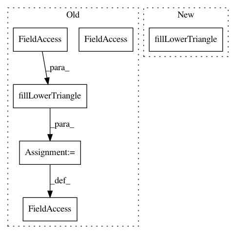

9b606c3049d0f6e20f0bb7091ffcf78df3671c54,hicexplorer/test/general/test_hicmatrix.py,,test_save_load,#,25
Before Change
hic.matrix = csr_matrix(matrix)
// make matrix symmetric
hic.setMatrix(hic.matrix, cut_intervals)
hic.matrix = hm.hiCMatrix.fillLowerTriangle(hic.matrix)
hic.correction_factors = np.array([0.5, 1, 2, 3, 4])
hic.nan_bins = np.array([4])
hic.save(outfile)
After Change
hic.matrix = csr_matrix(matrix)
// make matrix symmetric
hic.setMatrix(hic.matrix, cut_intervals)
hic.fillLowerTriangle()
hic.correction_factors = np.array([0.5, 1, 2, 3, 4])
hic.nan_bins = np.array([4])
hic.save(outfile)
In pattern: SUPERPATTERN
Frequency: 3
Non-data size: 6
Instances
Project Name: deeptools/HiCExplorer
Commit Name: 9b606c3049d0f6e20f0bb7091ffcf78df3671c54
Time: 2018-07-01
Author: wolffj@informatik.uni-freiburg.de
File Name: hicexplorer/test/general/test_hicmatrix.py
Class Name:
Method Name: test_save_load
Project Name: deeptools/HiCExplorer
Commit Name: 9b606c3049d0f6e20f0bb7091ffcf78df3671c54
Time: 2018-07-01
Author: wolffj@informatik.uni-freiburg.de
File Name: hicexplorer/test/general/test_hicmatrix.py
Class Name:
Method Name: test_filterOutInterChrCounts
Project Name: deeptools/HiCExplorer
Commit Name: 9b606c3049d0f6e20f0bb7091ffcf78df3671c54
Time: 2018-07-01
Author: wolffj@informatik.uni-freiburg.de
File Name: hicexplorer/test/general/test_hicmatrix.py
Class Name:
Method Name: test_diagflat